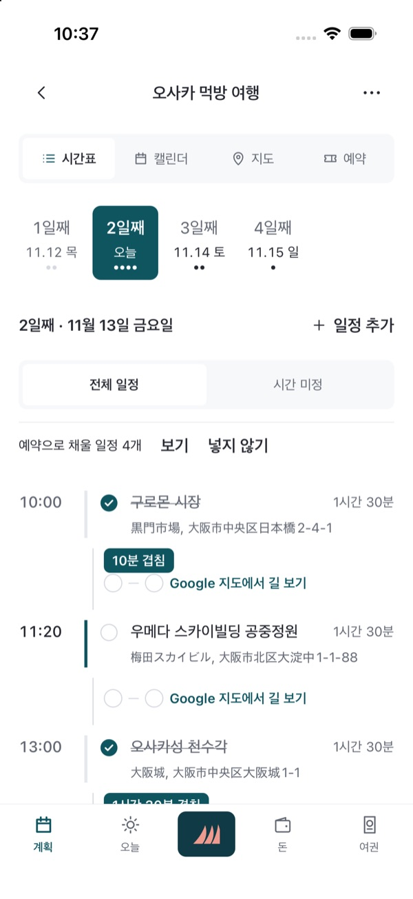
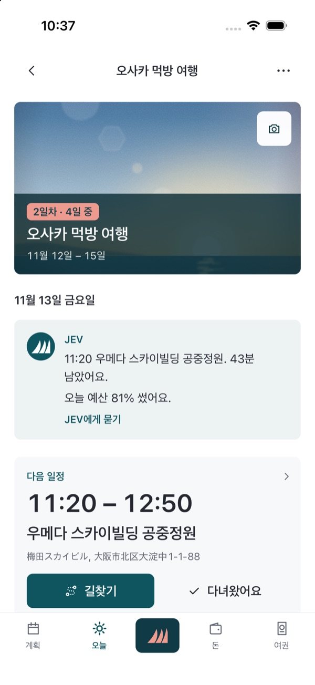

2026.07 ~ 진행 중 · 개인 프로젝트
Escale 여행 앱
일정·예약·경비를 여러 앱에서 따로 확인하던 불편을 줄이기 위해 Escale을 개발했습니다. 여행 준비 기록을 여행 중 다음 일정 확인과 동행자 정산으로 이어지도록 구성했고, 핵심 흐름은 로그인 없이 기기 저장소에서 동작하도록 구현했습니다.




iOS 시뮬레이터에서 테스트용 여행·지출 데이터로 캡처했습니다.
해결하려는 문제
직접 오사카 여행을 준비하면서 시작했습니다. 일정은 메모 앱, 예약은 메일과 캡처, 길찾기는 지도 앱, 경비는 가계부에 흩어져 있어서, 여행 중에 "지금 어디로 가야 하고 돈은 얼마나 남았는지"를 바로 알기 어려웠습니다. 엔화로 쓴 돈을 원화로 바꿔 동행자와 나누는 정산도 여행이 끝난 뒤 다시 계산해야 했습니다.
오사카 여행용 개인 웹앱(Osaka Pocket)에서 시작해 여행 수첩 앱(Margin)을 거쳐 지금의 Escale이 됐습니다.
주요 시도
-
반올림 후에도 분담 합계가 일치하도록
금액은 최소 화폐 단위의 정수로 저장했고, 환율은 정수 분수로 계산한 뒤 마지막에 한 번만 반올림하도록 구현했습니다. 나누고 남는 1원은 소수 부분이 큰 사람부터 배분해, 동행자별 분담의 합이 항상 전체 금액과 같게 했습니다.
-
여행지 시간대 기준으로 일정 다루기
일정을 여행별 IANA 시간대의 현지 시각으로 저장했습니다. 시간대를 바꿔도 실제 시각을 유지하도록 처리했고, 서머타임으로 없거나 겹치는 시각은 다시 입력받도록 구현했습니다.
-
로그인 없는 검색의 외부 API 호출 한도
핵심 흐름은 기기 SQLite만으로 동작하도록 구성했고, 계정은 선택적 백업에 사용했습니다. 로그인 없이 쓰는 장소 검색은 서버에서 IP별, 전체 하루 호출 한도를 두어 과도한 Google Places 호출을 제한했습니다.
사용자 흐름
- 여행 준비일정과 예약을 날짜별로 정리
- 여행 중 확인다음 일정·이동·남은 예산 확인
- 지출과 정산다른 통화의 지출을 기록하고 분담
- 여행 마무리완료를 확인하고 나라별 기록 보관
데이터·시스템 흐름
기기에서 처리
여행·일정·지출 입력
공유 도메인 계산
SQLite 저장·화면 표시
필요할 때 서버 호출
장소 검색·예약 문구 분석
Vercel Functions
인증·호출 한도 확인
외부 API 결과 반환
선택적 계정 기능
사용자 로그인
Supabase Auth·Postgres
백업·API 사용량 관리
일정·정산은 기기에 저장했고, 서버 기능과 선택적 계정 기능은 별도 경로로 구성했습니다. 서버 비밀키가 앱에 포함되지 않도록 경계를 두었습니다.
- 앱
- Expo, React Native, TypeScript, expo-sqlite
- 공유 도메인
- 통화, 환율, 분담, 시간대, 예약 계산을 앱과 서버가 같은 코드로 사용
- 서버
- Vercel Functions. 장소 검색과 추천, 예약 문구 분석
- 데이터
- Supabase Auth, Postgres (선택적 계정, 백업, API 사용량 한도)
- 외부 정보
- Open-Meteo 날씨, Frankfurter 환율, Google 지도 길찾기
역할
- 기획, 설계, 구현, 테스트 전체 (1인)
- AI 코딩 도구를 활용하고, 작성 규칙과 검증 기준은 저장소 문서로 직접 관리
- 공개 저장소에는 개인 자료를 제외한 소스와 재현 방법을 정리
보안과 데이터 경계
- Google·TypeSafe·Supabase 서비스 키는 서버에 분리했고, 앱에는 공개용 설정만 전달하도록 구성했습니다.
- 예약 문구를 서버로 보내기 전에 예약번호와 연락처로 보이는 부분을 가리도록 구현했습니다.
- 날씨, 환율, 장소를 불러오지 못하면 추측값 대신 실패 상태를 보여 주고, 직접 입력과 외부 지도 길찾기로 이어 갈 수 있게 했습니다.
- 앱 이름과 화면 구조를 여러 번 바꾸는 동안에도 저장 형식과 DB 마이그레이션은 유지해, 기존 사용자의 데이터가 사라지지 않게 했습니다.
트러블슈팅
-
여행을 끝내지도 않았는데 여권 도장이 찍힘
귀국일이 지나기만 하면 도장이 자동으로 발급되고 있었습니다. 실패하는 테스트로 먼저 재현한 뒤, 사용자가 여행을 마쳤다고 확인하는 완료 상태를 추가했습니다. 여행과 나라 조합을 식별자로 삼아 앱을 다시 켜거나 날짜가 바뀌어도 한 번만 발급되게 했습니다.
-
저장에 실패해도 도장이 보임
저장이 끝나기 전에 화면에 도장과 알림을 먼저 띄우고 있었습니다. 읽기 전 쓰기, 쓰기 실패, 겹치는 쓰기를 각각 테스트로 막고, 저장이 성공한 뒤에만 도장을 보여 주며 실패하면 다시 시도할 수 있게 했습니다.
-
정산이 두 번 기록됨
오래된 장부를 기준으로 송금을 기록하거나 같은 송금이 중복으로 남을 수 있었습니다. 최신 장부를 기준으로 다시 검증하고 중복 기록을 막는 회귀 테스트를 추가했습니다.
검증
- 금액 분담·시간대·저장·도장 발급의 회귀 테스트와 TypeScript 타입 검사를 수행했습니다. 이 항목은 기존 개발 검증 기록을 기준으로 정리했습니다.
- iOS 시뮬레이터에서 여행 생성, 일정, 오늘, 지출, 동행자 분담과 송금, 정산 완료, 여권 도장 발급까지 한 흐름으로 확인. 앱을 다시 켠 뒤에도 데이터와 도장 1개가 유지되는 것 확인
- 기존 개발 기록에서 iOS·Android 번들 내보내기와 iOS 네이티브 빌드를 확인했습니다. 스토어 심사·실기기 검증과 구분했습니다.
검증하지 못한 것과 다음 작업
- 실기기, 실제 외부 API를 연결한 화면과 영수증 카메라 인식은 아직 검증하지 못했습니다.
- 스토어 배포는 진행하지 않았습니다. 자동 테스트와 시뮬레이터 결과를 출시 완료로 표시하지 않았습니다.
- 초대, 공동 편집 같은 함께 쓰는 기능은 다음 단계로 남겨 두었습니다.